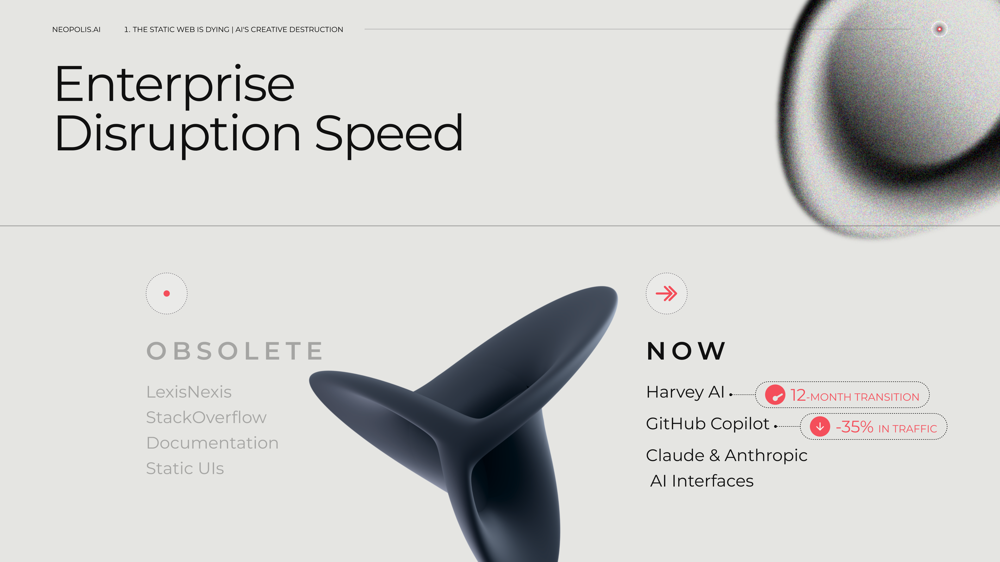

Work that connects technology, branding, and storytelling to drive clarity and impact.
This exploration deck was designed to transform a dense, technical presentation into a clear, market-ready narrative that communicates the future of human–AI collaboration. Neopolis is building Navii — an AI career agent designed to help people skip the grind and find the right fit. Rooted in the belief that the future of work belongs to human–AI teams, Navii understands users deeply, works in the background, and connects talent with the right opportunities at the right time. The project reframed complex AI-driven innovation into an accessible and compelling story for both technical and non-technical audiences — from early-stage investors to product partners.